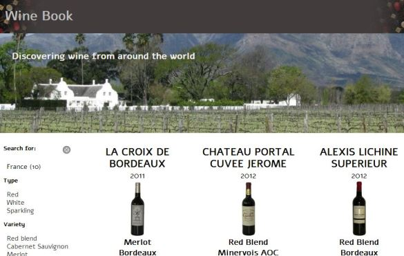

Wine Book
A fully responsive visual representation of the wines from around the world with a search feature developed using JavaScript/jQuery.
ViewA fully responsive visual representation of the wines from around the world with a search feature developed using JavaScript/jQuery.
ViewA fully responsive site exhibiting eBooks published by Erudition Digital, developed together with a backend developer and a designer.
ViewA complete revamp of Practising the Piano Wordpress blog that combines the blog and catalogue of publications for purchase.
ViewA General Assembly front-end web development course project displaying some jQuery functionality with calculating commuting speeds.
ViewA piano practising tool accompanying the Practising the Piano publication series that randomly generates piano scales in different variations.
ViewAnother complete revamp of the Erudition Digital Corporate Wordpress based website.
View